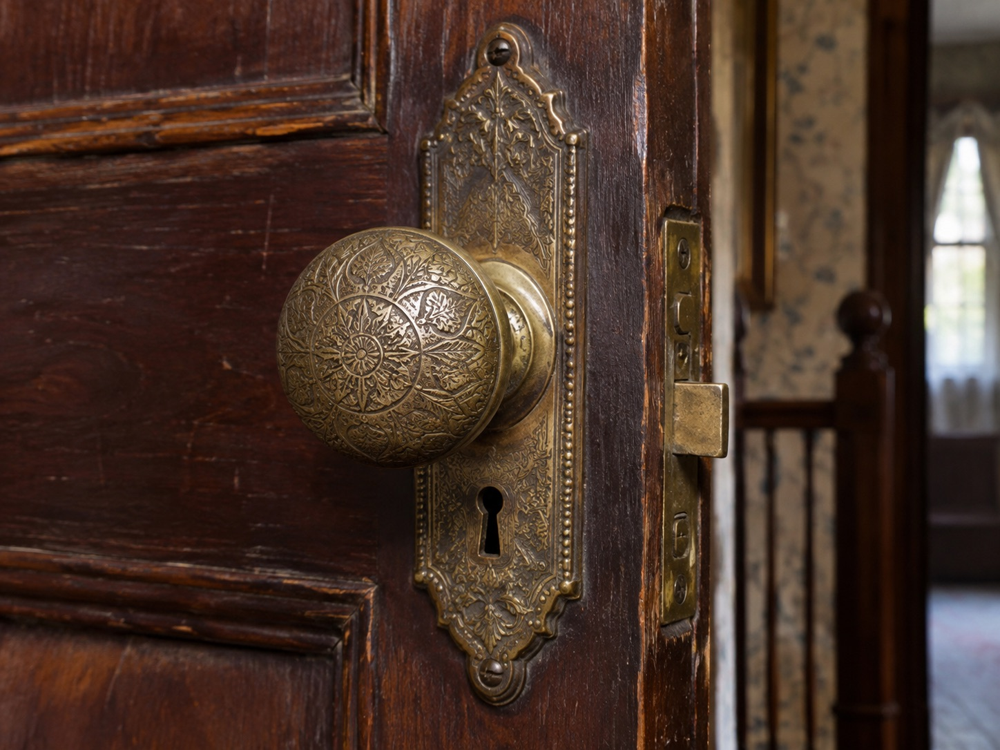

Original Door Hardware
Lizzie Borden House | Fall River, Massachusetts
The Artifact
The Lizzie Borden House retains historical architectural features that connect the present-day property to the household of Andrew and Abby Borden.
Among the surviving details are original doors and pieces of door hardware. These everyday fixtures are important because they provide physical evidence of the building's nineteenth-century interior arrangement.

Its Story
On August 4, 1892, Andrew Borden and his wife Abby were murdered inside their home at 92 Second Street in Fall River. Andrew's daughter Lizzie was subsequently tried and acquitted of the crimes.
The layout of the residence became significant during the investigation. Doors, stairways, adjoining rooms, and household access routes shaped questions about movement through the building.
Original hardware therefore has historical value beyond its appearance. It represents part of the physical environment in which the events of 1892 occurred.
However, a surviving doorknob or lock does not independently prove who entered a room, which doors were secured, or how the murders were committed. Such questions require examination of contemporary testimony and other documented evidence.
Connection to the Building
The Borden residence is now a historic visitor property associated with one of America's most widely discussed nineteenth-century murder cases.
Its surviving architectural components offer an important distinction between the original house and later recreations of its interior appearance.
Studying authentic physical details alongside trial records and historical photographs makes it possible to investigate the building as a documented historical location rather than relying exclusively on popular retellings of the crime.
Sources and Image Credit
Lizzie Borden House. (n.d.). The History. Official property history
Lizzie Borden: Warps & Wefts. (2021). Relics of the Past. Historical features and photographs